기본정보
- 출시 : 2011.04.21
- 제작 : 게임 프리크
- 장르 : RPG
- 등급 : 전체 이용가
- 가격 : 39,000원(현재는 단종된 제품으로 중고로만 구매가능)
- 플랫폼 : 닌텐도 DS
포켓몬스터(블랙)이란?
게임소개
- 지금까지 본 적이 없는 세계와 만난 적이 없는 포켓몬들 주인공 앞에 모습을 나타낸 플라스마단과 의문의 등장인물 N(엔) 포켓몬 해방을 사상으로 하는 그들의 목적은 대체 무엇인가? 그리고 전설의 포켓몬의 비밀이란? 새로운 무대 하나지방에서 100종류 이상의 새로운 포켓몬을 만나면서 모험이 시작됩니다.
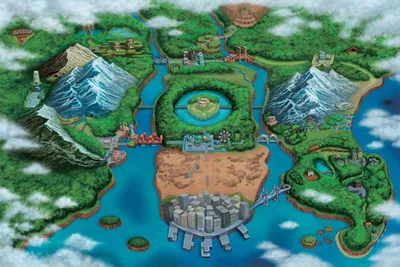
하나지방 하나지방 지도
하나지방 지도
게임 플레이 핵심
- 스타팅 포켓몬
- 게임을 시작할 때, 플레이어는 풀, 불, 물 타입의 스타팅 포켓몬 중 하나를 선택합니다. 이는 초기 모험의 기반이 됩니다.
- 체육관 배지 획득
- 하나지방의 8개 체육관을 돌며, 각각의 체육관 관장을 물리치고 배지를 획득합니다. 체육관마다 다양한 퍼즐과 도전이 기다리고 있습니다.
- 플라스마단과의 대결
- 주인공은 여러 차례 플라스마단과 맞서 싸우며, 그들의 포켓몬 해방 사상을 저지하고, 음모를 막아야 합니다. 의문의 인물 N과의 상호작용도 중요한 스토리 요소입니다.
- 전설의 포켓몬과의 만남
- 스토리 진행 중, 전설의 포켓몬 레시라무와 만나고 포획하는 과정을 겪게 됩니다. 이는 주요 스토리라인과 깊이 연관되어 있습니다.
- 포켓몬 도감 완성
- 다양한 지역을 탐험하고, 100종 이상의 새로운 포켓몬을 포획하여 도감을 채웁니다. 이를 위해 포켓몬을 진화시키거나 다른 플레이어와 교환하는 활동이 필요합니다.
- 포켓몬 리그 도전
- 8개의 배지를 모두 모은 후, 포켓몬 리그에 도전하여 엘리트 포와 챔피언을 물리치고 하나지방의 챔피언이 되는 것이 최종 목표입니다.
스토리 및 주요 등장인물
스토리
- 포켓몬스터 블랙의 스토리는 주인공이 하나지방에서 체육관 배지를 모아 포켓몬 리그에 도전하는 여정을 담고 있습니다. 주인공과 두 친구 체렌과 벨은 포켓몬 트레이너로서 모험을 떠나며, 포켓몬 해방을 주장하는 플라스마단과 그들의 리더 N과 맞서 싸우게 됩니다. N은 포켓몬이 인간의 통제에서 벗어나야 한다고 주장하며, 주인공과 여러 번 대결합니다. 스토리 중반에 주인공은 전설의 포켓몬 레시라무를 만나게 되며, 이는 플라스마단과의 최종 결전에서 중요한 역할을 합니다. 모든 체육관 배지를 모은 후 주인공은 포켓몬 리그에 도전하여 사천왕과 챔피언을 이겨야 합니다. 최종적으로 주인공은 플라스마단을 물리치고 하나지방의 평화를 되찾으며 포켓몬 리그 챔피언이 됩니다.
주요 등장인물
- 주인공
- 게임 시작 전, 성별과 이름을 정할 수 있다.
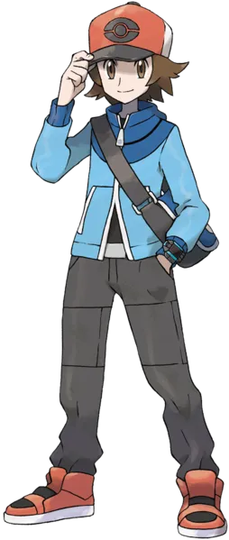
남자 캐릭터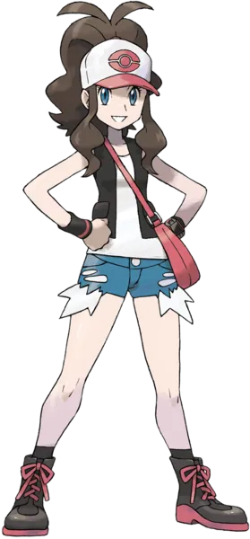
여자 캐릭터- 라이벌
- 체렌
- 소위 말하는 '깐깐한 반장' 성격의 소유자이며 아는 것이 많아서 하나 지방을 한참 여행하고 다녔던 블랙·화이트에선 주인공과 벨에게 많은 도움을 주고 상황에 따라서는 직접 행동을 같이 하며 서로 돕습니다.
- 벨
- 다소 천연스러운 성격에 덜렁이끼가 강한 여자아이로 아버지의 맹반대를 무릅쓰고 주인공 및 체렌처럼 주박사에게서 받은 포켓몬과 함께 여행하며 체렌 못지 않게 인간적으로 크게 성장하는 모습을 보여줍니다.
체렌과 벨은 주인공의 소꿉친구 겸 라이벌 캐릭터입니다.
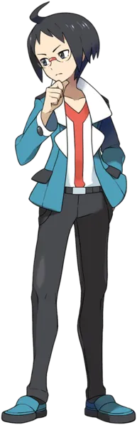
체렌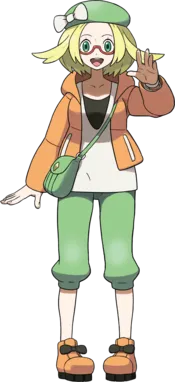
벨- 플라스마단
- N
- 본명은 나츄렐 하르모니아 그로피우스(Natural Harmonia Gropius) 작중에선 N이라고 불립니다.
- N은 단순한 악당이 아니라, 포켓몬과 인간의 관계에 대해 깊이 고민하는 인물입니다. 그의 이상과 진실 사이의 갈등은 게임의 중요한 테마 중 하나입니다.
- 게치스
- 플라스마단의 간부급 집단인 칠현인의 일원이자 리더격 위치에 선 자로 칠현인 전원이 그의 뜻에 동조하며 충성심을 품고 있기에 플라스마단 안에서 그가 미치는 영향력은 막대합니다.
포켓몬스터 시리즈의 등장하는 악의 조직입니다.
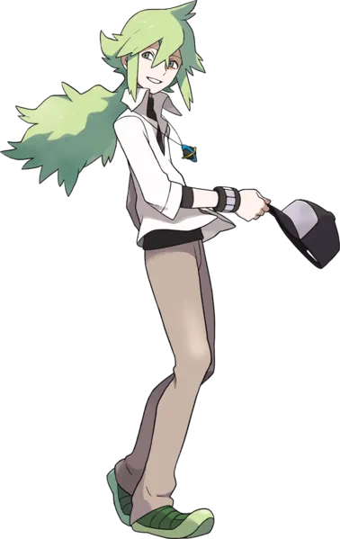
N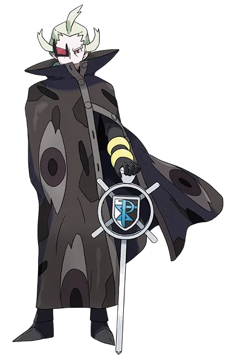
게치스중요 포켓몬 소개
- 하나지방에선 155개의 포켓몬 수가 존재합니다. 많은 포켓몬들 중 스토리를 진행할 때 성능이 좋은 포켓몬 중심으로 소개합니다. 포켓몬에 자세한 정보는 포켓몬 목록 에서 확인하실 수 있습니다.
스타팅 포켓몬
- 포켓몬스터 시리즈의 하나지방 스타팅 포켓몬에는 주리비얀, 뚜꾸리, 수댕이가 있습니다.
- 대검귀(수댕이 → 쌍검자비 → 대검귀)
- 물 타입 포켓몬
- 스타팅 포켓몬중에 가장 좋다고 평가합니다. 후반에는 다른 포켓몬들에게 밀려 주로 비전 셔틀로 많이 사용합니다.
- 야생에서 서식하는 포켓몬들로 자연 환경에서 랜덤하게 출현하고 전투를 통해 포획할 수 있습니다.
- 악비아르(깜눈크 → 악비르 → 악비아르)
- 땅 / 악 타입 포켓몬
- 악타입으로서 활용도가 높으며 추후 스토리 진행중 사천왕 두 명도 보내버리는 원맨쇼를 볼 수 있습니다.(특성은 자기과신을 추천합니다.)
- 불비달마(달막화 → 불비달마)
- 불꽃 타입
- 레시라무를 얻기 전 최고의 불꽃 타입 포켓몬입니다. 우격다짐의 특성과 140의 높은 공격력으로 엄청난 화력을 자랑합니다.
- 타격귀
- 격투 타입
- BW에선 악타입 포켓몬이 많아 카운터 칠 수있는 격투타입이 중요합니다. 125의 높은 공격력 + 준수한 스피드 + 옹골참(특성) 3박자가 완벽한 조합을 이룹니다.
- 저리더프(저리어 → 저리릴 → 저리더프)
- 전기 타입
- 5세대에서 제일 쓸만한 전기 포켓몬입니다. 부유 특성 때문에 유일한 약점인 땅타입도 무효 처리되어서 무약점인 포켓몬 입니다.(화이트 버전에선 제크로무로 대체)
- 액스라이즈(터검니 → 액슨도 → 액스라이즈)
- 드래곤 타입
- 타입중에서 가장 좋은 드래곤 타입이며 147의 높은 공격력으로 엄청난 화력을 자랑하는 포켓몬입니다.
- 말 그대로 화석에서 부활시켜 얻을 수 있는 포켓몬입니다. 평범한 방법으로는 얻을 수 없으며 스토리 진행중 얻게됩니다.
- 아케오스(아켄 → 아케오스)
- 바위 / 비행 타입
- 비행 타입으로 공중날기 배워 이동수단으로 좋습니다. 또한 140의 공격력과 비행타입 기술인 위력 110의 애크러벳(지닌 물건 없을시 위력 2배)으로 웬만한 약점 포켓몬은 한방입니다.
- 포켓몬 중에서도 일종의 신이나 영물 취급을 받거나 매우 희귀한 포켓몬의 통칭합니다.
- 레시라무
- 드래곤 / 불꽃 타입
- 포켓몬스터 5세대의 메인 전설의 포켓몬 중 하나입니다. 메인 포켓몬답게 종족값이 680이고, 150의 특수 공격력과 레시라무 전용기술인 크로스플레임은 엄청난 화력을 자랑합니다.
- 큐레무
- 드래곤 / 얼음 타입
- 전설 포켓몬 답게 종족값 660에 공격, 특수 공격 130인 쌍두형이지만 입수 시기가 매우 늦어 스토리에는 거의 쓰지 못합니다.
- 하나지방에는 8개의 체육관이 존재합니다. 포켓몬 관장들과 대결에 승리하여 배지를 얻어 포켓몬 리그에 도전할 자격이 주어집니다. 각 체육관 관장의 자세한 정보는 체육관 공략 에서 확인 하실 수 있습니다.
- 성신체육관(덴트, 팟, 콘)
- 성신시티에 풀 타입(덴트), 불꽃 타입(팟), 물 타입(콘) 체육관 관장들입니다.
- 주 타입 : 노말 / 풀 타입(덴트), 노말 / 불 타입(팟), 노말 / 풀 타입(콘)
- 공략 추천 포켓몬 - 꿈터에서 받는 원숭이 포켓몬(스토리 진행중 얻습니다.)
- 성신체육관에서는 플레이어가 선택한 스타팅 포켓몬의 반대 타입으로 상대하게 됩니다.
- 덴트 포켓몬
- 팟 포켓몬
- 콘 포켓몬
- 칠보체육관
- 칠보시티에 알로에 체육관 관장입니다.
- 주 타입 : 노말 타입
- 노말 타입 약점 : 격투 타입
- 공략 추천 포켓몬 - 타격귀, 샤비(스타팅)
- 알로에 포켓몬
- 구름체육관
- 구름시티에 아티 체육관 관장입니다.
- 주 타입 : 벌레 타입
- 벌레 타입 약점 : 불꽃 / 비행 / 바위 타입
- 공략 추천 포켓몬 - 차오꿀(스타팅), 암트르, 달막화
- 아티 포켓몬
- 뇌문체육관
- 뇌문시티에 카밀레 체육관 관장입니다.
- 주 타입 : 전기 타입
- 전기 타입 약점 : 땅 타입
- 공략 추천 포켓몬 - 암트르, 두더류, 두까비, 악비르, 돌살이, 달막화
- 카밀레 포켓몬
- 물풍경체육관
- 물풍경시티에 야콘 체육관 관장입니다.
- 주 타입 : 땅 타입
- 땅 타입 약점 : 물 / 풀 / 얼음 타입
- 공략 추천 포켓몬 - 두까비, 모아머, 프로토가/아켄, 바닐프티, 바라철록, 드레디어, 달막화, 몽얌나
- 야콘 포켓몬
- 궐수체육관
- 궐수시티에 풍란 체육관 관장입니다.
- 주 타입 : 비행 타입
- 비행 타입 약점 : 전기 / 얼음 / 바위 타입
- 공략 추천 포켓몬 - 늑골라, 전툴라, 기기어르, 제브라이카
- 풍란 포켓몬
- 설화체육관
- 설화시티에 담죽 체육관 관장입니다.
- 주 타입 : 얼음 타입
- 얼음 타입 약점 : 불꽃 / 격투 / 바위 / 강철 타입
- 공략 추천 포켓몬 - 대부분의 스토리 에이스(약점이 많아 쉽게 클리어가능)
- 담죽 포켓몬
- 쌍용체육관
- 쌍용시티에 사간 체육관 관장입니다.
- 주 타입 : 드래곤 타입
- 드래곤 타입 약점 : 얼음 / 드래곤 타입
- 공략 추천 포켓몬 - 액스라이즈, 크리만, 바닐리치, 툰베어, 코바르온, 아케오스
- 사간 포켓몬
- 포켓몬 리그는 게임의 최종 도전 장소로, 플레이어가 하나지방의 최고의 트레이너가 되기 위해 사천왕과 챔피언에 도전하는 곳입니다.(스토리 전개상 2번 도전하기 때문에 1차와 2차로 소개합니다.) 각 사천왕과 챔피언에 자세한 정보는 리그 공략 에서 확인 하실 수 있습니다.
- 사천왕 망초
- 포켓몬 리그에 사천왕 망초입니다.
- 주 타입 : 고스트 타입
- 고스트 타입 약점 : 고스트 / 드래곤 타입
- 공략 추천 포켓몬 - 악비아르, 곤율거니, 절각참(2차전), 샤크니아(2차전)
- 망초 포켓몬(1차)
- 망초 포켓몬(2차)
- 눈여아와 둥실라이드가 추가 되었습니다.
- 사천왕 블래리
- 포켓몬 리그에 사천왕 블래리입니다.
- 주 타입 : 악 타입
- 타입 약점 : 격투 / 벌레 타입
- 공략 추천 포켓몬 - 모든 격투 타입 포켓몬, 절각참
- 블래리 포켓몬(1차)
- 블래리 포켓몬(2차)
- 샤크니아와 드래피온이 추가 되었습니다.
- 사천왕 카틀레야
- 포켓몬 리그에 사천왕 카틀레야입니다.
- 주 타입 : 에스퍼 타입
- 에스퍼 타입 약점 : 고스트 / 벌레 / 악 타입
- 공략 추천 포켓몬 - 악비아르, 곤율거니, 샹델라, 절각참, 포푸니라(2차전)
- 카틀레야 포켓몬(1차)
- 카틀레야 포켓몬(2차)
- 동탁군과 메타그로스가 추가 되었습니다.
- 사천왕 연무
- 포켓몬 리그에 사천왕 연무입니다.
- 주 타입 : 격투 타입
- 격투 타입 약점 : 비행 / 에스퍼 타입
- 공략 추천 포켓몬 - 심보러, 란쿨루스, 고디모아젤, 아케오스, 골루그, 아쿠스타, 크로뱃, 무장조
- 연무 포켓몬(1차)
- 연무 포켓몬(2차)
- 버섯모와 독개굴이 추가 되었습니다.
- 챔피언 노간주
- 포켓몬 리그에 챔피언 노간주입니다.
- 주 타입이 없으며 다양한 타입의 포켓몬을 소유하고 있습니다.
- 공략 추천 포켓몬 - 불비달마, 샹델라, 불카모스, 액스라이즈, 타격귀, 기가이어스, 아케오스, 늑골라
- 노간주 포켓몬
- 포켓몬스터 블랙에서는 뉴욕을 모티브로 하나지방이라는 새로운 지역에서 모험이 펼쳐집니다. 전작들과 다르게 추가된 포켓몬의 수가 가장 많은 세대이자 전작 포켓몬이 등장하지 않으며(1차이후등장) 그 덕에 더더욱 새로운 시작이라는 부분을 부각시켜줍니다. 스토리 연출 또한 뛰어나며 BGM이 게임에 빠져들게 합니다.
- 새로운 지역과 포켓몬
- 전작과 다른 환경이다 보니 게임을 할 때 새로운 지역에서 새로운 포켓몬들과 모험을 떠나는게 신선한 느낌을 줍니다.
- 깊이 있는 스토리와 캐릭터
- 역대 시리즈 중에서도 스토리 비중이 가장 높고 뚜렷한 주제 의식이 존재하는 작품입니다. 선과 악의 구도가아닌 서로 다른 신념을 가진 N과 주인공의 대립구도이며 이 게임에서 전해주는 메시지가 고평가가 됩니다.
- BGM
- 각 도시와 지역, 트레이너 배틀이나 체육관 배틀 등 다양한 상황에 맞게 BGM이 있습니다. 어린 시절의 향수를 자극하며 BGM으로 인해 게임의 몰입을 돕습니다.
- 고전게임
- 아무래도 옛날 게임이다 보니 현재로서는 닌텐도 칩이나 닌텐도가 없어서 닌텐도로는 게임을 하기 어려운 부분이 있습니다. 하지만 PC나 모바일에서 에뮬레이터나 드라스틱을 이용하여 게임을 플레이 할 수 있습니다.
- 난이도
- 1차 엔딩이 있고 그다음 2차 스토리를 진행하는데 2차에서 전반적으로 상대 포켓몬들의 레벨이 높아져 어느 정도 레벨링 노가다를 해야하는 상황이 있습니다.
- 제한된 포켓몬
- 1차 스토리는 맨 처음부터 새로운 포켓몬들만으로 게임을 진행하기 때문에 기존 시리즈의 포켓몬을 바로 만날 수 없습니다. 초반 게임 플레이가 단조롭게 느낄수 도 있습니다.
- 포켓몬게임은 옛날 1세대부터 현재 9세대 까지 아주 많은 시리즈가 존재합니다. 포켓몬 인기 순위에서 포켓몬스터 블랙/화이트는 8위를 기록하며 판매량은 약 1,550만 장입니다. 추가로 포켓몬 시리즈중 가장 인기가 많은 작품은 포켓몬스터 레드/블루/그린 시리즈이며 판매량은 약 3,100만 장입니다.
- 포켓몬스터는 게임 뿐만 아니라 애니메이션, 만화, 영화, 카드 게임 등 다양한 매체로 확장됨며 종합 엔터테인먼트 브랜드로 성장했습니다.
- 1~2세대는 게임보이/게임보이 컬러, 3세대는 게임보이 어드밴스, 4~5세대는 닌텐도 DS, 6~7세대는 닌텐도 3DS, 8~9세대는 닌텐도 스위치로 포켓몬스터는 게임은 시리즈별로 다양한 콘솔과 함께 했습니다.
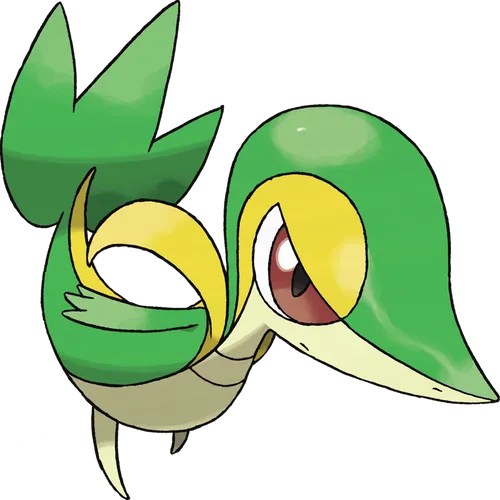
주리비얀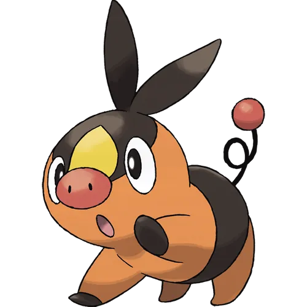
뚜꾸리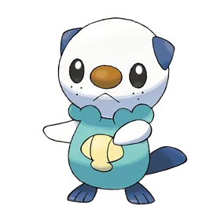
수댕이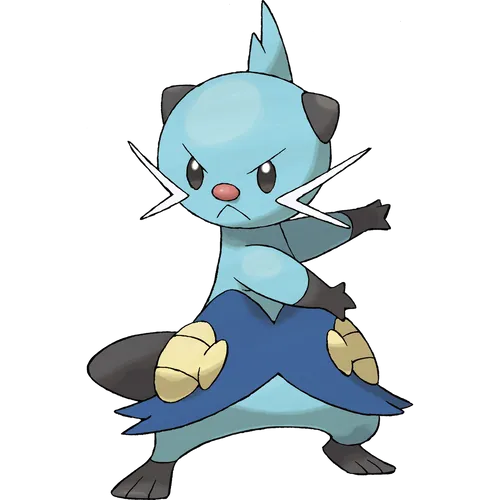
쌍검자비 대검귀
대검귀
필드 포켓몬
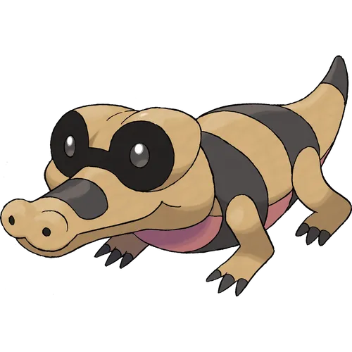
깜눈크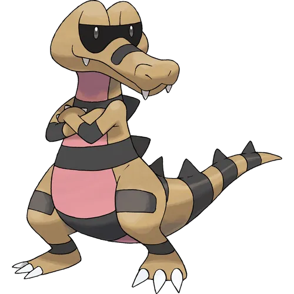
악비르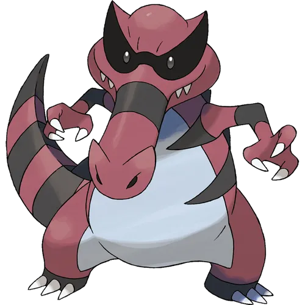
악비아르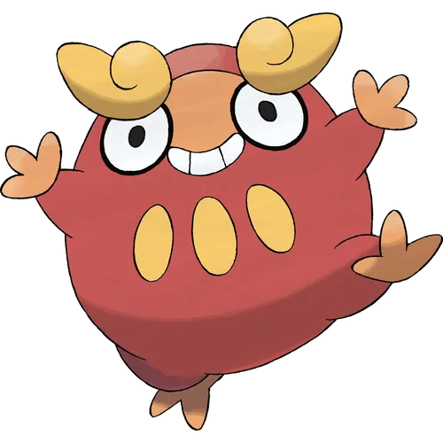
달막화 불비달마
불비달마
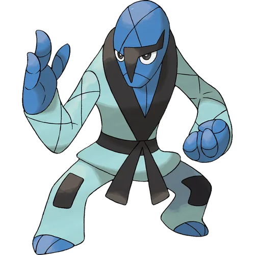
타격귀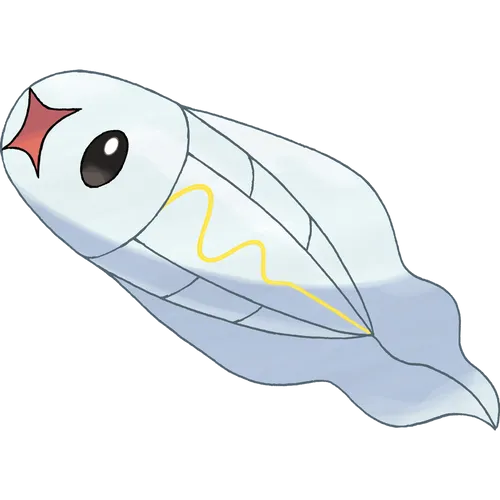
저리어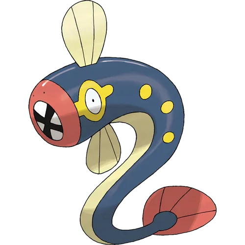
저리릴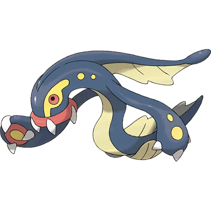
저리더프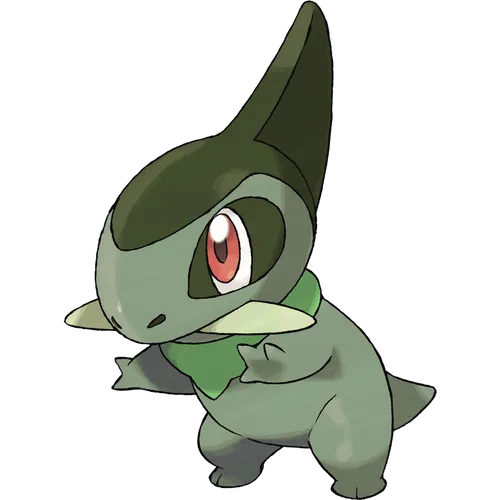
터검니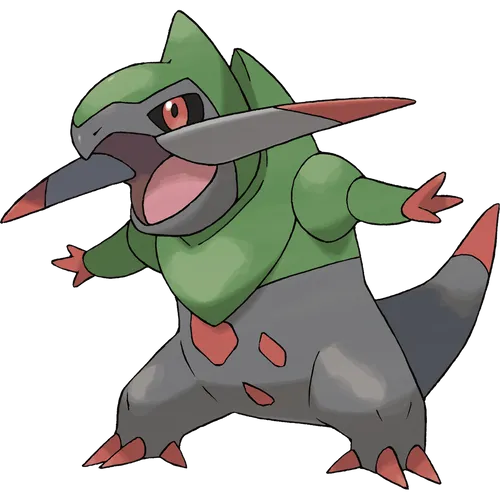
액슨도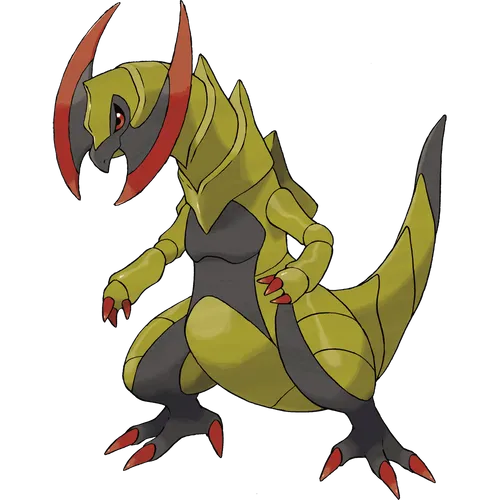
액스라이즈화석 포켓몬
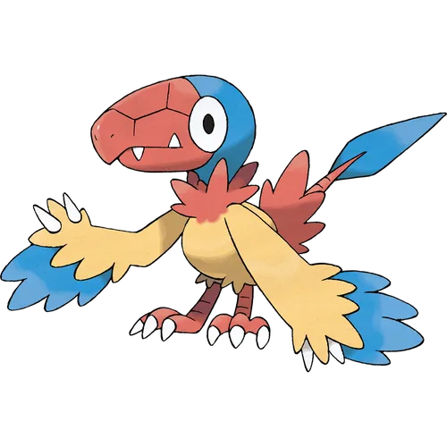
아켄 아케오스
아케오스
전설 포켓몬
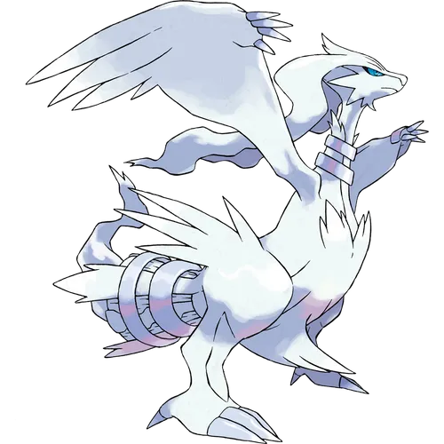
레시라무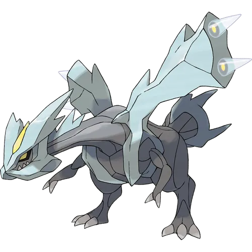
큐레무체육관 관장
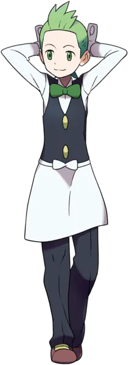
덴트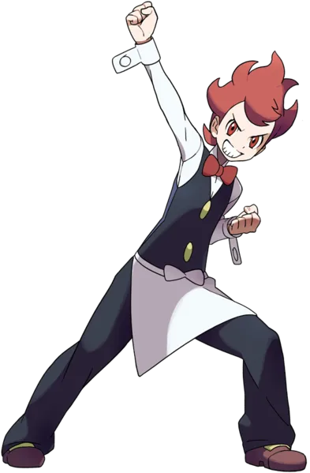
팟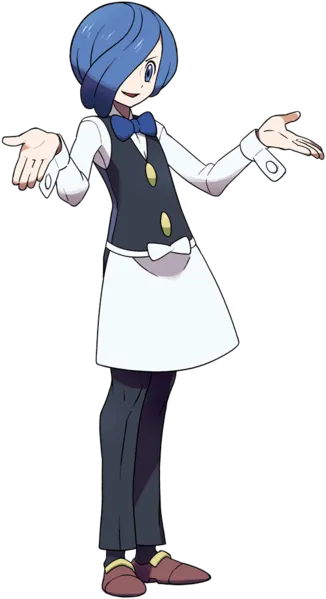
콘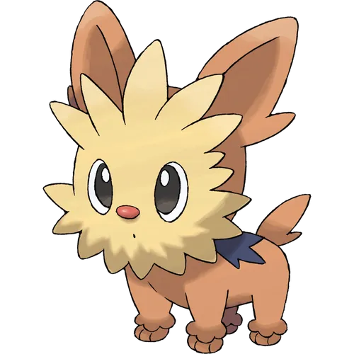
요테리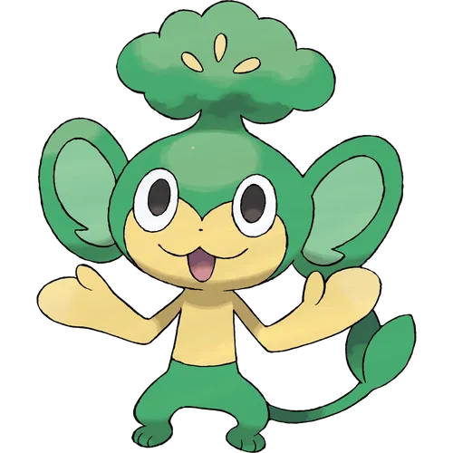
야냐프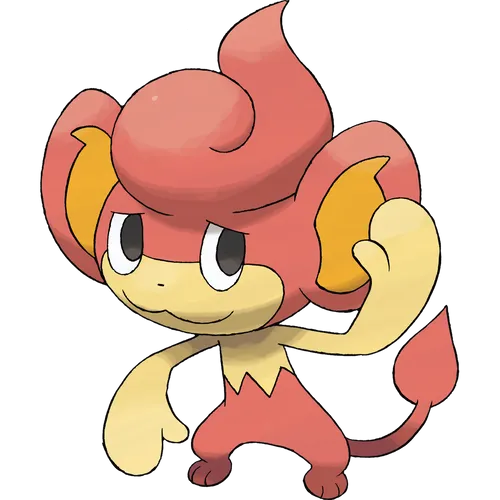
바오프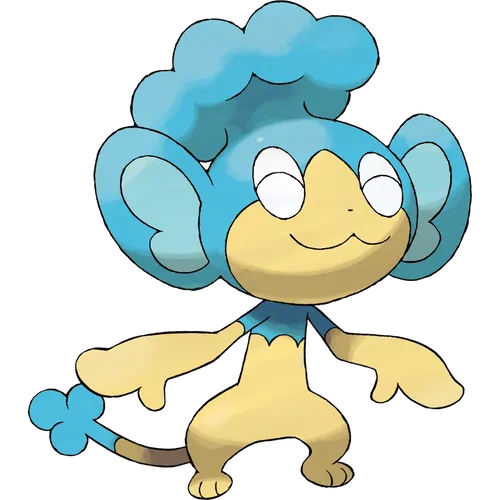
앗차프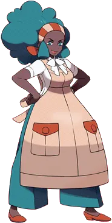
알로에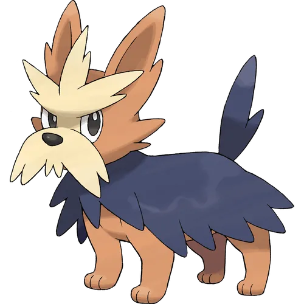
하데리어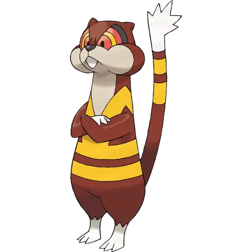
보르그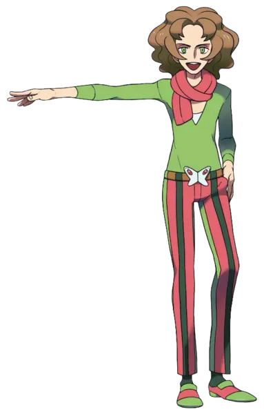
아티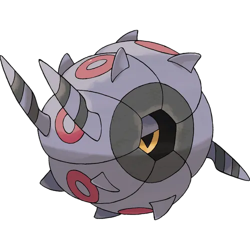
휠구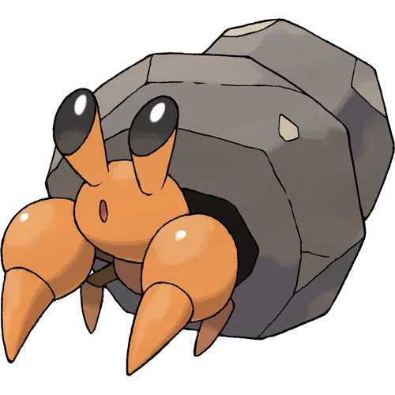
돌살이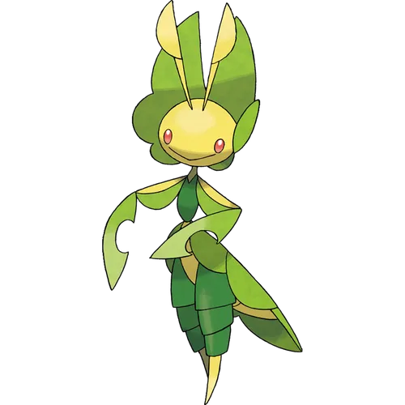
모아머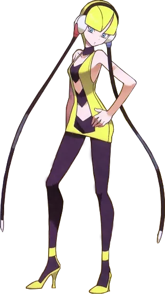
카밀레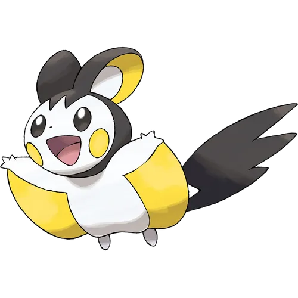
애몽가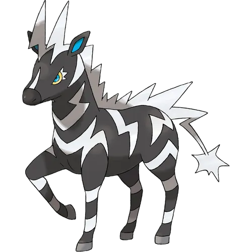
제브라이카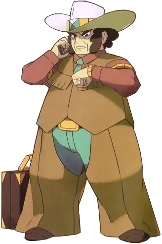
야콘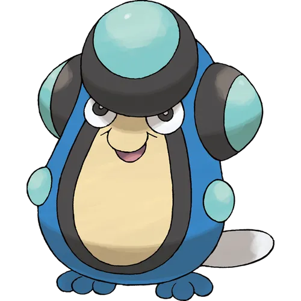
두까비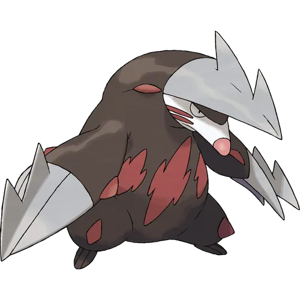
몰드류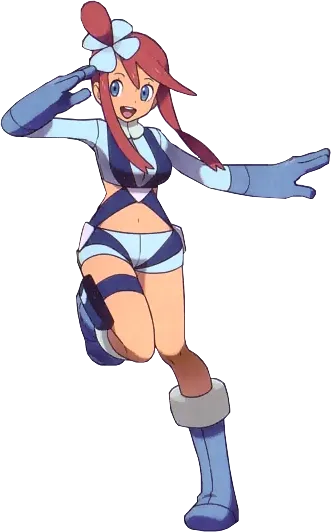
풍란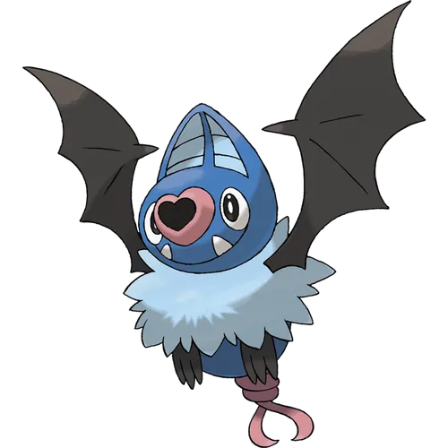
맘박쥐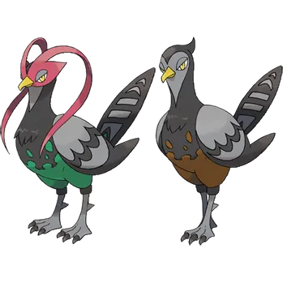
켄호로우(수컷/암컷)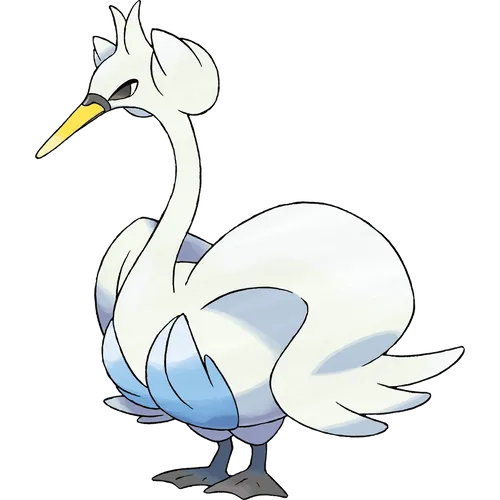
스완나포켓몬 리그
특징 및 장단점
특징
장점
단점
어떤 영향 tmi
포켓몬 게임 시리즈
포켓몬 프랜차이즈
닌텐도 콘솔